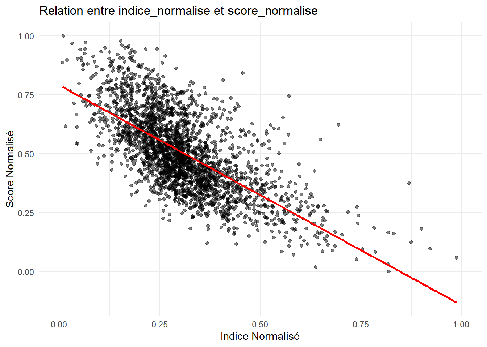

Lecture: Parmi l’ensemble des individus interrogés, 16% pratiquent le tricot (Knitting); 27% des femmes le pratiquent contre 1,8% des hommes
Encadré Technique 1: Détails de la méthode ACM
L’ACM permet d’explorer les relations entre plusieurs variables qualitatives en projetant les individus et les modalités dans un espace de faible dimension. Elle est souvent utilisée pour analyser des questionnaires et des tableaux de contingence complexes.
Principaux résultats d’une ACM
Inertie totale
Mesure la dispersion des données et est donnée par :
où \(\lambda_k\) sont les valeurs propres et \(q\) est le nombre total de modalités.
Valeurs propres \(\lambda_k\)
Elles indiquent la variance expliquée par chaque axe factoriel. Plus une valeur propre est élevée, plus l’axe correspondant est important dans l’analyse.
Rapports de corrélation \(\eta^2\)
Le rapport de corrélation \(\eta^2\) mesure la liaison entre une variable et un axe factoriel :
où $f_i $ est la fréquence de l’individu/modalité $i $, et \(d_{i,k}\)est sa distance à l’axe \(k\) .
Coordonnées des individus et modalités
Elles sont obtenues à partir des vecteurs propres et permettent la représentation graphique des données :
\(C_{i,k} = \frac{v_{i,k}}{\sqrt{\lambda_k}}\)
où \(v_{i,k}\) est le vecteur propre associé à l’axe \(k\).
Cos² (Qualité de représentation)
Indique dans quelle mesure un point est bien représenté sur un axe donné. Une valeur proche de **1** signifie que la projection sur cet axe est pertinente.
Contributions
Elles mesurent l’importance d’une modalité ou d’un individu dans la construction d’un axe. Plus une contribution est élevée, plus l’élément joue un rôle important dans l’interprétation de l’axe.
# Extract coordinates for dimension 2coord_dim2_modalites <- acm2_fm$var$coord[, 2]# Create a table associating the modalities and their coordinates in dimension 2modalites_coord <-data.frame(Modalite = modalites_names, Coord_Dim2 = coord_dim2_modalites)# Keep only the two necessary columnsmodalites_coord_selected <- modalites_coord[, c("Modalite", "Coord_Dim2")]print(modalites_coord_selected)
# Initialize a vector to store the index of each individualdata_pratiques$indice_culturel <-0# Browse each individualfor (i in1:nrow(data_pratiques)) {# Initialize individual's index to 0 indice_individu <-0# Browse each practice column (columns 3 to 27)for (pratique in3:27) {# Retrieve the individual's response for this practice (0 or 1) reponse <- data_pratiques[i, pratique]# If the answer is 1, add the coordinate of the corresponding modality to the index.if (reponse ==1) {# Create the modality name (e.g. “knitting_1” or “knitting_0”) nom_modalite_1 <-paste0(names(data_pratiques)[pratique], "_1") nom_modalite_0 <-paste0(names(data_pratiques)[pratique], "_0")# Find the coordinate associated with the corresponding modalityif (nom_modalite_1 %in% modalites_coord$Modalite) { indice_individu <- indice_individu + modalites_coord$Coord_Dim2[modalites_coord$Modalite == nom_modalite_1] }if (nom_modalite_0 %in% modalites_coord$Modalite) { indice_individu <- indice_individu + modalites_coord$Coord_Dim2[modalites_coord$Modalite == nom_modalite_0] } } }# Assign the calculated index to the individual data_pratiques$indice_culturel[i] <- indice_individu}####Normalisation# Calculate minimum and maximum index valuesmin_indice <-min(data_pratiques$indice_culturel, na.rm =TRUE)max_indice <-max(data_pratiques$indice_culturel, na.rm =TRUE)# Normalize indexdata_pratiques$indice_culturel_normalise <- (data_pratiques$indice_culturel - min_indice) / (max_indice - min_indice)# Check resultshead(data_pratiques[, c("indice_culturel", "indice_culturel_normalise")])
Notre indice est donc construit de la façon suivante:
\[I_{1j} = \sum_{k=1}^{Z} w_{1k} \cdot X_{k j}\]
Dans cette expression, \(I_{1j}\) désigne l’indice de l’individu \(j\), tandis que \(w_{1k}\) représente le poids associé à chaque variable culturelle \(X_{kj}\). La somme englobe toutes les variables culturelles \(Z\), ce qui nous permet de saisir l’engagement culturel global de l’individu.
code R
my_data_frame$identity<-data_pratiques$indice_culturel_normalisemy_data_frame$indice<-ra_data$indice_culturelggplot(my_data_frame, aes(x = identity, fill = Sex)) +geom_density(alpha =0.5) +scale_fill_manual(values =c("blue", "pink")) +labs(title ="Density of The Normalized Cultural Index by Sexe",x ="Normalized Cultural Index",y ="Density",fill ="Sexe") +theme_minimal()
# ✅ 1. On garde uniquement les variables présentes à la fois dans les coeffs et dans my_data_framevars_kept <-intersect(coeffs_nz$Variable, colnames(my_data_frame))# ✅ 2. Sous‐ensemble de la matrice de donnéesx_full_reduced <- my_data_frame[, vars_kept, drop =FALSE]# ✅ 3. Vecteur des coefficients dans le même ordre que les variables conservéescoef_vector <- coeffs_nz$Coefficient[match(vars_kept, coeffs_nz$Variable)]# ✅ 4. Calcul du score brut LASSOmy_data_frame$score_LASSO <-as.numeric(as.matrix(x_full_reduced) %*% coef_vector)# ✅ 5. Normalisation du scoremin_s <-min(my_data_frame$score_LASSO, na.rm =TRUE)max_s <-max(my_data_frame$score_LASSO, na.rm =TRUE)my_data_frame$score_normalise_LASSO <-if (max_s > min_s) { (my_data_frame$score_LASSO - min_s) / (max_s - min_s)} else {0}
# Proportions de 'score_scale' par genretable_score_gender <-table(my_data_frame$score_scale, my_data_frame$Sex)table_score_gender_percent <-prop.table(table_score_gender, 2) *100# Calcul par genretable_score_gender_percent
Men Women
Very Masculine 2.66240682 0.06116208
1 19.80830671 1.16207951
2 46.96485623 13.63914373
3 26.73056443 36.33027523
4 3.40788072 31.43730887
5 0.31948882 13.70030581
Very Feminine 0.10649627 3.66972477
code R
# Proportions de 'satisfaction' par genretable_satisfaction_gender <-table(my_data_frame$satisfaction, my_data_frame$Sex)table_satisfaction_gender_percent <-prop.table(table_satisfaction_gender, 2) *100# Calcul par genretable_satisfaction_gender_percent
Men Women
High 35.15399 32.66917
Low 35.80366 39.75143
Medium 29.04235 27.57940
code R
# Visualiser la relation entre indice_normalise et score_normaliselibrary(ggplot2)ggplot(my_data_frame, aes(x = identity, y = score_normalise_LASSO)) +geom_point(alpha =0.5) +labs(title ="Relation entre indice_normalise et score_normalise", x ="Indice Normalisé", y ="Score Normalisé") +theme_minimal() +geom_smooth(method ="lm", col ="red", se =FALSE) # Ajouter une droite de régression linéaire

code R
# Convertir les variables en facteurs si nécessairemy_data_frame$DIPLOM <-as.factor(my_data_frame$DIPLOM)my_data_frame$SEXE <-as.factor(my_data_frame$SEXE)my_data_frame$CLASSIF <-as.factor(my_data_frame$CLASSIF)my_data_frame$Income <-as.factor(my_data_frame$Income)my_data_frame$Health <-as.factor(my_data_frame$Health)my_data_frame$satisfaction <-as.factor(my_data_frame$satisfaction)my_data_frame$SITUA <-as.factor(my_data_frame$SITUA)my_data_frame$CS2D <-as.factor(my_data_frame$CS2D)# Créer une fonction pour comparer les modèles avec 'score' et 'Sex' comme prédicteurscompare_models <-function(variable) {# Affichage de la variable actuellement traitéecat("Traitement de la variable :", variable, "\n")# Modèle avec score comme prédicteur model_score <-polr(as.formula(paste(variable, "~ score_normalise_LASSO")), data = my_data_frame, method ="logistic")# Modèle avec sexe comme prédicteur model_sex <-polr(as.formula(paste(variable, "~ SEXE")), data = my_data_frame, method ="logistic")# Comparer l'AIC des deux modèles aic_score <-AIC(model_score) aic_sex <-AIC(model_sex)# Comparer et retourner le meilleur modèleif (aic_score < aic_sex) {return(data.frame(variable = variable, best_predictor ="Score", AIC_score = aic_score, AIC_sex = aic_sex)) } else {return(data.frame(variable = variable, best_predictor ="Sex", AIC_score = aic_score, AIC_sex = aic_sex)) }}# Liste des variables d'intérêt à analyservariables <-c("DIPLOM", "CLASSIF", "SITUA", "satisfaction", "Health", "Income", "CS2D")# Appliquer la fonction pour chaque variable d'intérêt et combiner les résultatsresults <-do.call(rbind, lapply(variables, compare_models))
Traitement de la variable : DIPLOM
Traitement de la variable : CLASSIF
Traitement de la variable : SITUA
Traitement de la variable : satisfaction
Traitement de la variable : Health
Traitement de la variable : Income
Traitement de la variable : CS2D
code R
# Afficher les résultats sous forme de tableauprint(results)
# Convertir les variables en facteurs si nécessairemy_data_frame$DIPLOM <-as.factor(my_data_frame$DIPLOM)my_data_frame$SEXE <-as.factor(my_data_frame$SEXE)my_data_frame$CLASSIF <-as.factor(my_data_frame$CLASSIF)my_data_frame$Income <-as.factor(my_data_frame$Income)my_data_frame$Health <-as.factor(my_data_frame$Health)my_data_frame$satisfaction <-as.factor(my_data_frame$satisfaction)my_data_frame$SITUA <-as.factor(my_data_frame$SITUA)my_data_frame$CS2D <-as.factor(my_data_frame$CS2D)# Créer une fonction pour comparer les modèles avec 'score' et 'Sex' comme prédicteurscompare_models <-function(variable) {# Affichage de la variable actuellement traitéecat("Traitement de la variable :", variable, "\n")# Modèle avec score comme prédicteur model_score <-polr(as.formula(paste(variable, "~ score_normalise_LASSO")), data = my_data_frame, method ="logistic")# Modèle avec sexe comme prédicteur model_id <-polr(as.formula(paste(variable, "~ identity")), data = my_data_frame, method ="logistic")# Comparer l'AIC des deux modèles aic_score <-AIC(model_score) aic_id <-AIC(model_id)# Comparer et retourner le meilleur modèleif (aic_score < aic_id) {return(data.frame(variable = variable, best_predictor ="Score", AIC_score = aic_score, AIC_id = aic_id)) } else {return(data.frame(variable = variable, best_predictor ="id", AIC_score = aic_score, AIC_id = aic_id)) }}# Liste des variables d'intérêt à analyservariables <-c("satisfaction", "Health", "Income")# Appliquer la fonction pour chaque variable d'intérêt et combiner les résultatsresults <-do.call(rbind, lapply(variables, compare_models))
Traitement de la variable : satisfaction
Traitement de la variable : Health
Traitement de la variable : Income
code R
# Afficher les résultats sous forme de tableauprint(results)
variable best_predictor AIC_score AIC_id
1 satisfaction Score 5550.873 20142.02
2 Health Score 3288.556 14580.80
3 Income Score 4835.411 17466.37
3.6 Variables socio-économiques et score de genre
3.7 Distance aux normes
code R
library(dplyr)library(ggplot2)# S'assurer que SEXE est bien un facteur clairmy_data_frame$Sex <-factor(my_data_frame$Sex, levels =c("Men", "Women"))# Calcul direct du z-score par groupe (pas de jointure)my_data_frame <- my_data_frame %>%group_by(Sex) %>%mutate(mean_gender =mean(score_normalise_LASSO, na.rm =TRUE),sd_gender =sd(score_normalise_LASSO, na.rm =TRUE),distance_abs =abs((score_normalise_LASSO - mean_gender) / sd_gender) ) %>%ungroup()# Calcul des moyennes des distances par sexemean_distances <- my_data_frame %>%group_by(Sex) %>%summarise(mean_distance =mean(distance_abs, na.rm =TRUE),.groups ="drop" )# Visualisationggplot(my_data_frame, aes(x = distance_abs, color = Sex, fill = Sex)) +geom_density(alpha =0.4) +labs(title ="Density of Distance to the Norm (Score), by Sex",x ="Distance to the Norm (Z-score)",y ="Density" ) +scale_fill_manual(values =c("blue", "pink")) +scale_color_manual(values =c("blue", "pink")) +theme_minimal() +geom_vline(data = mean_distances,aes(xintercept = mean_distance, color = Sex),linetype ="dashed" ) +theme(legend.title =element_blank())
code R
library(dplyr)library(ggplot2)library(plotly)# Convertir DIPLOM et Sex en facteursmy_data_frame$DIPLOM <-as.factor(my_data_frame$DIPLOM)my_data_frame$Sex <-as.factor(my_data_frame$Sex)# Création des quartiles de distance_absmy_data_frame <- my_data_frame %>%mutate(quartile_distance =cut(distance_abs, breaks =quantile(distance_abs, probs =c(0, 0.25, 0.5, 0.75, 1), na.rm =TRUE), include.lowest =TRUE, labels =c("Q1", "Q2", "Q3", "Q4"))) # Étiquettes des quartiles# Créer un tableau de proportionsdf_proportions <- my_data_frame %>%group_by(Sex, DIPLOM, quartile_distance) %>%summarise(count =n(), .groups ="drop") %>%group_by(Sex, DIPLOM) %>%mutate(proportion = count /sum(count)) # Calcul de la proportion# Ajouter une colonne avec les descriptions des diplômesdiplome_labels <-c("Vous n'avez jamais été à l'école ou vous l'avez quittée avant la fin du primaire","Aucun diplôme et scolarité interrompue à la fin du primaire ou avant la fin du collège","Aucun diplôme et scolarité jusqu'à la fin du collège et au-delà","CEP","BEPC, brevet élémentaire, brevet des collèges, DNB","CAP, BEP ou diplôme équivalent","Baccalauréat général ou technologique, brevet supérieur","Capacité en droit, DAEU, ESEU","Baccalauréat professionnel, brevet professionnel, de technicien ou d'enseignement, diplôme équivalent","BTS, DUT, DEUST, diplôme de la santé ou social de niveau Bac+2 ou diplôme équivalent","Licence, licence pro, maîtrise ou autre diplôme de niveau Bac+3 ou 4 ou diplôme équivalent","Master, DEA, DESS, diplôme grande école de niveau Bac+5, doctorat de santé","Doctorat de recherche (hors santé)","NSP","REF")# Ajouter les libellés des diplômes à df_proportionsdf_proportions <- df_proportions %>%mutate(DIPLOM_label = diplome_labels[as.numeric(DIPLOM)])# Séparer les données en deux sous-ensembles (Hommes et Femmes)df_men <- df_proportions %>%filter(Sex =="Men")df_women <- df_proportions %>%filter(Sex =="Women")# Graphique pour les hommesfig_men <-plot_ly(df_men, x =~DIPLOM, y =~proportion, color =~quartile_distance, type ="bar",text =~paste(DIPLOM_label, "<br>", round(proportion*100, 1), "%"), # Affichage du libellé et proportiontextposition ="inside") %>%layout(title ="Proportion de score_scale par niveau de diplôme (Hommes)",xaxis =list(title ="Niveau de diplôme"),yaxis =list(title ="Proportion", tickformat ="%"),barmode ="stack", # Empilement des barreshovermode ="closest") # Afficher les informations les plus proches du survol# Graphique pour les femmesfig_women <-plot_ly(df_women, x =~DIPLOM, y =~proportion, color =~quartile_distance, type ="bar",text =~paste(DIPLOM_label, "<br>", round(proportion*100, 1), "%"), # Affichage du libellé et proportiontextposition ="inside") %>%layout(title ="Proportion de score_scale par niveau de diplôme (Femmes)",xaxis =list(title ="Niveau de diplôme"),yaxis =list(title ="Proportion", tickformat ="%"),barmode ="stack", # Empilement des barreshovermode ="closest") # Afficher les informations les plus proches du survol# Afficher les deux graphiques séparésfig_men